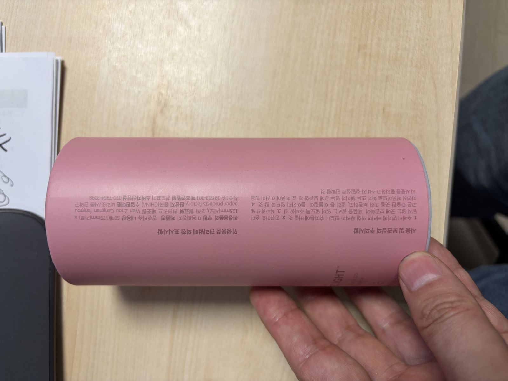

← 전체 프로젝트
Brand & Product · Coupang Category No.1
팝캔티슈
미드저니로 그린 캐릭터를 상품화하고, OEM 패키지를 직접 설계하고, 유통까지 직접 뚫어 쿠팡 카테고리 1위에 올린 캐릭터 티슈 브랜드입니다. 리뷰 3,000개, 평점 4.6의 베스트셀링 아이템으로 꾸준히 팔리고 있습니다.

미드저니로 그린 캐릭터를 상품화하고, OEM 패키지를 직접 설계하고, 유통까지 직접 뚫어 쿠팡 카테고리 1위에 올린 캐릭터 티슈 브랜드입니다. 리뷰 3,000개, 평점 4.6의 베스트셀링 아이템으로 꾸준히 팔리고 있습니다.
휴지는 초등학생 아이들의 필수품입니다. 신학기마다 교실로, 새 학년 선물로 티슈가 오갑니다. 그런데 시장의 티슈는 전부 어른 기준의 밋밋한 생활용품이었습니다.
부모들이 아이 신학기에, 그리고 집들이에 들고 갈 만한 "선물이 되는 티슈"가 비어 있는 것을 확인하고, 디자인 완성도만으로 차별화할 수 있는 일상재 시장을 노렸습니다.
초등학생이 매일 쓰는 물건인데 아이가 좋아할 디자인은 시장에 없었습니다.
새 학기마다 티슈가 선물로 오가지만, 선물답게 만들어진 티슈는 없었습니다.
집들이에 티슈를 들고 가는 문화는 있는데 "이왕이면 예쁜 것"이라는 수요가 비어 있었습니다.
화면에서 끝나는 디자인이 아니라 인쇄 도수, 원가, 제조 제약 안에서 완성되는 디자인입니다.
미드저니 캐릭터가 실물이 되기까지의 실제 산출물입니다.



화면 속 시안은 취향의 영역이지만, 카테고리 1위와 리뷰 3,000개는 시장의 판정입니다. 디자인이 실제로 팔리는지를 증명하는 것, 그것이 이 케이스의 전부입니다.